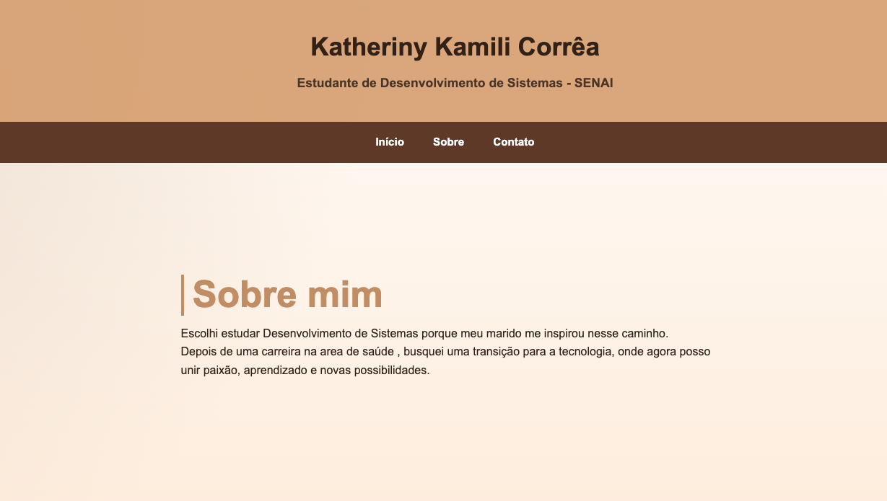

Coffee House
Projeto fictício de cafeteria gourmet com proposta visual charmosa, navegação em múltiplas páginas e foco em apresentação visual.
Estes projetos mostram minha caminhada no front-end, com o aperfeiçoamento contínuo.
Projeto fictício de cafeteria gourmet com proposta visual charmosa, navegação em múltiplas páginas e foco em apresentação visual.
Repositório voltado aos estudos de desenvolvimento front-end, com prática de estruturação, estilização e experimentação visual.

Exemplo prático de consumo de API REST com JavaScript puro, manipulando dados e exibindo conteúdo no front-end de forma dinâmica.